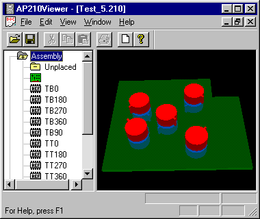

Filename:
Test_5.210
Author:
Mike Keenan
Title:
Component Orientation
Design Source:
ATX Specification - Version 2.01
Test_5.brd
Test_5.lib
Source Schema Date:
Mon Sep 4 18:51:43 EDT 2000
Validation Schema Date:
Mon Sep 4 18:51:43 EDT 2000
Conformance Class:
Recommended Practice Reference:
Translator:
IDF to AP210 Translator 11/13/00
PostProcessing:
None
Test Purpose:
Test component placement and rotation on both sides of the board.
Applicable Rules Clauses:
SEDS (Step Enhancement and Descripency System):
N/A
Description:
Contains 10 2D HO-8 components rotated 0, 90, 180, 270 and
360 degrees and mounted on both sides of the board. The
components rotated the same degree are mounted at the same
location but on different sides of the board. The locations
are asymmetrical to help detect errors, in placement.
A detail description of the matrix transformation required to go from 2D to
3D can be found in the
Matrix Tutorial.
Supporting Graphic:

Figure 1: Primary Surface View with transparent board
Testing History:
Extensive testing during development of the AP210Viewer and IDF to AP210 translator.